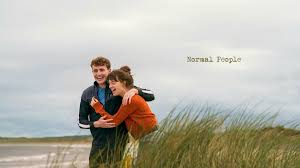
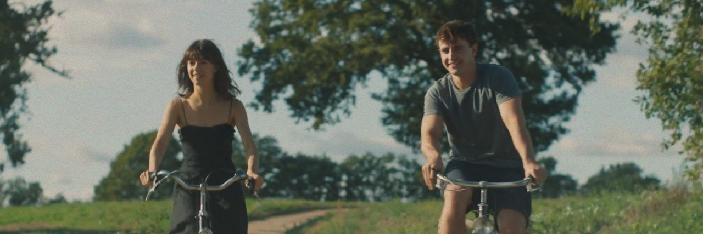
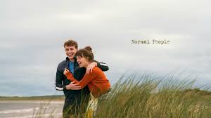
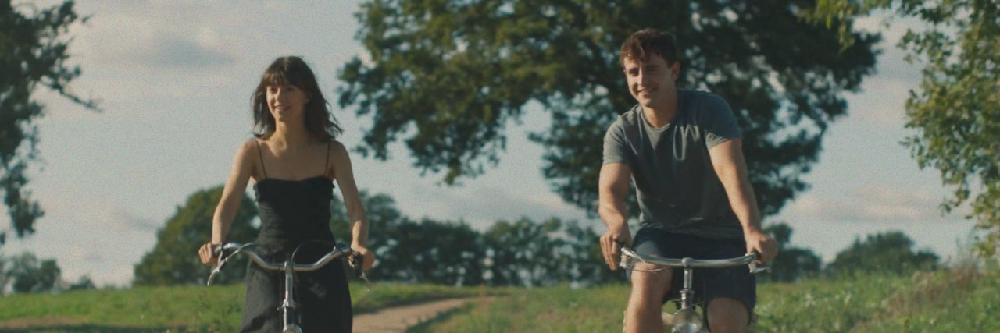

Descrição
Pessoas Normais, de Sally Rooney, é uma obra que mergulha profundamente na complexidade dos relacionamentos humanos, especialmente na juventude. A narrativa acompanha Marianne e Connell, dois jovens irlandeses que, apesar de compartilharem um forte laço afetivo desde o ensino médio, vivem um relacionamento marcado por silêncios, desencontros e uma intensa carga emocional. Rooney constrói seus personagens com uma honestidade brutal, explorando temas como identidade, classe social, saúde mental e vulnerabilidade afetiva, revelando como pequenas escolhas e inseguranças moldam o curso de suas vidas.
A escrita minimalista de Rooney é um dos pontos centrais da obra. Ela opta por diálogos enxutos e descrições sutis, que, apesar da simplicidade, carregam uma profundidade emocional impactante. A ausência de marcas tradicionais de diálogo, por exemplo, intensifica a sensação de proximidade e realismo. Além disso, a autora rejeita o sentimentalismo fácil, preferindo expor as contradições internas dos protagonistas, o que convida o leitor a refletir sobre a complexidade das conexões humanas e o quanto somos, muitas vezes, incompreensíveis até para nós mesmos.
Tanto o livro quanto a série adaptada pela BBC e Hulu conseguem captar a sensibilidade da história. A série, em especial, se destaca por sua direção delicada, atuações intensas (com destaque para Paul Mescal e Daisy Edgar-Jones), trilha sonora intimista e um cuidado visual que traduz com fidelidade a atmosfera do romance. Recomendo fortemente a leitura do livro e o acompanhamento da série, especialmente para quem busca histórias que tratem de forma realista os dilemas da juventude, o amor contemporâneo e os conflitos emocionais mais profundos.
Frases marcantes
“Marianne, ele disse, não sou religioso, mas às vezes acho que deus fez você para mim.”
“Eu contesto cada pensamento ou ação ou sentimento meu que está sendo controlado como se vivêssemos em uma fantasia autoritária.”
“São engraçadas as decisões que a gente toma porque gosta de alguém, ele diz, e aí sua vida inteira muda.”
“Você só precisa esclarecer para si mesmo o que acha que é justo e bom no mundo.”
“Marianne tinha a sensação de que sua vida real acontecia em outro lugar, bem distante dali, acontecia sem ela, e não sabia se um dia descobriria onde era e se seria parte dela.”
Opiniões dos leitores
- "Uma leitura intensa e realista sobre o que significa se conectar com alguém." – Clara M.
- "Senti cada capítulo como se estivesse vivendo com os personagens." – João F.
- "Triste, bonito e verdadeiro. Um dos melhores livros que já li." – Rafaela D.
- "A escrita delicada capta com precisão as emoções e inseguranças dos protagonistas." – Isabela C.
- "A prosa é direta, sem aspas nos diálogos, o que pode estranhar no início, mas se torna envolvente." – Aline G.
- "Explora temas como classe social, saúde mental e comunicação na era moderna com muita profundidade." – Benjamin H.
- "Marianne e Connell são complexos e imperfeitos, o que os torna extremamente humanos." – Ana B.